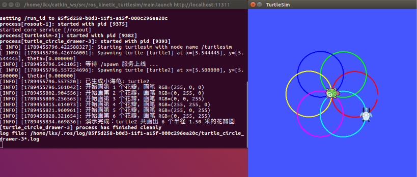

小海龟画花瓣实验
一、实验目的与环境说明
1.1 实验目的
- 掌握 turtlesim 的服务调用：用
/set_pen设置画笔颜色、用/teleport_absolute瞬移海龟； - 掌握花瓣图案的几何构造：让 6 个圆心均匀分布于公共中心四周、圆心距等于半径的圆依次绘制，形成两两相扣的花瓣；
- 通过
roslaunch一键启动仿真器与控制节点，完成彩色花瓣的自动绘制。
1.2 实验环境
| 项目 | 配置 |
|---|---|
| 操作系统 | Ubuntu 20.04（VMware 虚拟机） |
| ROS 发行版 | ROS Noetic |
| 仿真器 | turtlesim |
| 编程语言 | Python 3（rospy） |
| 功能包 | turtle_sim_experiment |
功能包目录结构如下：
turtle_sim_experiment/
├── main.py # 主程序：控制小海龟画花瓣
├── main.launch # roslaunch 入口：一键启动 turtlesim + 画花瓣节点
├── package.xml # 包清单，声明 rospy、geometry_msgs 和 turtlesim 依赖
├── CMakeLists.txt # 编译配置，安装 Python 脚本
└── README.md # 运行说明
二、核心控制原理与算法解析
2.1 花瓣的几何构造
本实验控制小海龟从公共中心 (5.5, 5.5) 出发，连续画 6 个圆组成花瓣，关键在圆的布置方式：
6 个圆的圆心均匀分布在公共中心四周，且每个圆心到公共中心的距离正好等于圆的半径。 这样每个圆都经过公共中心，相邻圆两两相交，叠在一起就是一圈互相扣住的花瓣（不同颜色代表不同花瓣，最终效果见 4.4 节）。
第 i 个花瓣对应圆心角 θ = 2πi/6。画每个圆之前，先用 /turtle2/teleport_absolute 把海龟瞬移到该圆的起点——公共中心外 2r 处（圆心再向外 r），起点处朝向取圆的切线方向（θ + π/2）；瞬移前通过 /turtle2/set_pen 抬笔（off=1），到位后落笔（off=0），避免瞬移过程画出直线。每画完一个花瓣换一种画笔颜色，6 个花瓣依次使用红、绿、蓝、黄、紫、青。
2.2 圆周运动参数
画每个圆时，向 /turtle2/cmd_vel 同时发布线速度 linear.x = 1.5 与角速度 angular.z = 1.0，海龟做逆时针圆周运动：
- 圆的半径 r = v/ω = 1.5/1.0 = 1.5 米；
- 画一个整圆的用时 T = 2π/ω ≈ 6.28 秒。
turtlesim 内置 0.5 秒看门狗，超过 0.5 秒没有收到新的速度指令海龟就会刹停，所以控制循环以 rospy.Rate(50) 的 50 Hz 频率持续发布速度指令，直到本瓣画满整圆。
2.3 服务等待
用 roslaunch 一键启动时，仿真器和画花瓣节点是同时拉起的，谁先准备好并不确定。如果画花瓣节点跑得快、仿真器还没就绪，一开始的服务调用就会失败。所以程序开头先执行 rospy.wait_for_service('/spawn')，停下来等仿真器的服务上线，等到了再继续往下走，这样无论两个节点谁先谁后，程序都不会出错。
2.4 算法流程
- 初始化节点
turtle_circle_drawer，读取花瓣数、线速度、角速度参数； - 等待服务上线，将小海龟放到公共中心 (5.5, 5.5)；
- 循环 6 次，每轮执行：抬笔 → 瞬移到该花瓣起点并转到切线方向 → 换色落笔 → 50 Hz 持续发布速度指令画满 T = 2π/ω 秒（一个整圆）→ 抬笔；
- 6 个花瓣全部完成后输出结束日志。
三、完整源码展示
最新源码同步保存在本书仓库
src/chap1/turtle_sim_experiment/，可直接查看与下载。
#!/usr/bin/env python
# -*- coding: utf-8 -*-
# 小海龟画花瓣节点：控制小海龟连续画 6 个
# 圆心均匀分布、两两相扣的彩色圆（花瓣）。代码兼容 Python 2/3。
import math
import rospy
from geometry_msgs.msg import Twist
from turtlesim.srv import Spawn, SetPen, TeleportAbsolute
PETAL_COLORS = [(255, 0, 0), (0, 255, 0), (0, 0, 255),
(255, 255, 0), (255, 0, 255), (0, 255, 255)]
CENTER_X, CENTER_Y = 5.5, 5.5 # 公共中心：所有花瓣圆的交点
def main():
rospy.init_node('turtle_circle_drawer')
petals = rospy.get_param('~petals', 6)
linear_speed = rospy.get_param('~linear_speed', 1.5)
angular_speed = rospy.get_param('~angular_speed', 1.0)
radius = linear_speed / angular_speed # r = v / w
circle_period = 2.0 * math.pi / angular_speed # 画整圆用时 T = 2π / w
# 等待 turtlesim 的服务上线（launch 一键启动时仿真器可能稍后就绪）
rospy.wait_for_service('/spawn')
spawn = rospy.ServiceProxy('/spawn', Spawn)
set_pen = rospy.ServiceProxy('/turtle2/set_pen', SetPen)
teleport = rospy.ServiceProxy('/turtle2/teleport_absolute', TeleportAbsolute)
resp = spawn(CENTER_X, CENTER_Y, 0.0, 'turtle2') # 将小海龟放到公共中心
rospy.loginfo('小海龟就位: %s', resp.name)
pub = rospy.Publisher('/turtle2/cmd_vel', Twist, queue_size=10)
rate = rospy.Rate(50) # 50 Hz，远高于 0.5 秒看门狗阈值
twist = Twist()
twist.linear.x = linear_speed
twist.angular.z = angular_speed
try:
for i in range(petals):
# 第 i 个花瓣：起点在公共中心外 2r 处，朝向取圆的切线方向
theta = 2.0 * math.pi * i / petals
start_x = CENTER_X + 2.0 * radius * math.cos(theta)
start_y = CENTER_Y + 2.0 * radius * math.sin(theta)
heading = theta + math.pi / 2.0
r, g, b = PETAL_COLORS[i % len(PETAL_COLORS)]
rospy.loginfo('开始画第 %d 个花瓣，画笔 RGB=(%d, %d, %d)', i + 1, r, g, b)
set_pen(r, g, b, 3, 1) # 抬笔，瞬移过程不画线
teleport(start_x, start_y, heading) # 瞬移到该花瓣的起点
set_pen(r, g, b, 3, 0) # 落笔开画
end_time = rospy.Time.now() + rospy.Duration(circle_period)
while rospy.Time.now() < end_time and not rospy.is_shutdown():
pub.publish(twist)
rate.sleep()
set_pen(r, g, b, 3, 1) # 本瓣完成，抬笔
except rospy.ROSInterruptException:
pass
rospy.loginfo('演示完成：小海龟共画出 %d 个半径 %.2f 米的花瓣圆', petals, radius)
if __name__ == '__main__':
main()
四、运行与验证
4.1 编译功能包
mkdir -p ~/catkin_ws/src
cp -r <仓库路径>/src/chap1/turtle_sim_experiment ~/catkin_ws/src/
chmod +x ~/catkin_ws/src/turtle_sim_experiment/main.py
cd ~/catkin_ws && catkin_make
source devel/setup.bash
4.2 启动节点
roslaunch turtle_sim_experiment main.launch
roslaunch 会自动完成两件事：启动 ROS Master（无需单独运行 roscore），并按 main.launch 先后拉起 turtlesim 仿真器和画花瓣节点。启动后终端依次输出：
process[turtlesim-1]: started with pid [xxxx]
process[turtle_circle_drawer-2]: started with pid [xxxx]
[INFO] [...]: 等待 /spawn 服务上线 ...
[INFO] [...]: 小海龟就位
[INFO] [...]: 开始画第 1 个花瓣，画笔 RGB=(255, 0, 0)
4.3 服务与节点验证
程序运行期间，另开终端可以查看系统的运行状态：
rosnode list # 可看到 /turtlesim 与 /turtle_circle_drawer 两个节点
rosservice list | grep turtle2 # 可看到 /turtle2/... 系列服务
rostopic list | grep turtle2 # 可看到 /turtle2/cmd_vel、/turtle2/pose 等话题
4.4 预期结果
节点运行后，小海龟从公共中心出发，依次画出 6 个半径 1.5 米、颜色各异的圆；每个圆用时约 6.28 秒，全部完成后终端输出：
[INFO] [...]: 开始画第 6 个花瓣，画笔 RGB=(0, 255, 255)
[INFO] [...]: 演示完成：小海龟共画出 6 个半径 1.50 米的花瓣圆
最终窗口中呈现 6 个两两相扣的彩色花瓣：

由于 turtlesim 的采样周期和瞬移误差，个别花瓣的起止点可能存在轻微缝隙，属于正常现象。
五、参数调整
通过修改花瓣数、线速度和角速度，可以改变花瓣图案的形态：
| 参数设置 | 运行效果 |
|---|---|
petals = 6，linear_speed = 1.5，angular_speed = 1.0 |
6 瓣，花瓣圆半径 1.5 m |
petals = 4，linear_speed = 1.5，angular_speed = 1.0 |
4 瓣（四叶草图案） |
petals = 8，linear_speed = 1.0，angular_speed = 1.0 |
8 瓣，花瓣圆半径 1 m，图案更密 |
petals = 6，linear_speed = 1.5，angular_speed = -1.0 |
顺时针画瓣，花瓣朝向相反 |
注意：花瓣数不宜过大——花瓣圆半径 r = v/ω 需满足 2r < 5.5，否则瞬移起点会超出 turtlesim 的 11×11 画布边界，画出的圆会被截断。
六、总结
本实验综合 /set_pen 画笔服务、/teleport_absolute 瞬移服务与 /turtle2/cmd_vel 速度话题发布，控制小海龟自动画出 6 个两两相扣的彩色花瓣。花瓣图案的核心是几何构造：圆心均匀分布于公共中心四周、圆心距等于半径，使每个圆都经过公共中心、相邻圆两两相交。
通过本实验，可以掌握 ROS 服务调用的方法，比如用 /set_pen 换画笔、用 /teleport_absolute 瞬移海龟；也可以体会服务与话题两类通信方式各自的分工——像换画笔、瞬移这种做一次就要一个明确结果的操作适合用服务，而持续控制海龟运动的速度指令适合用话题发布；此外还熟悉了用 roslaunch 一键组织多个节点同时启动的方法。